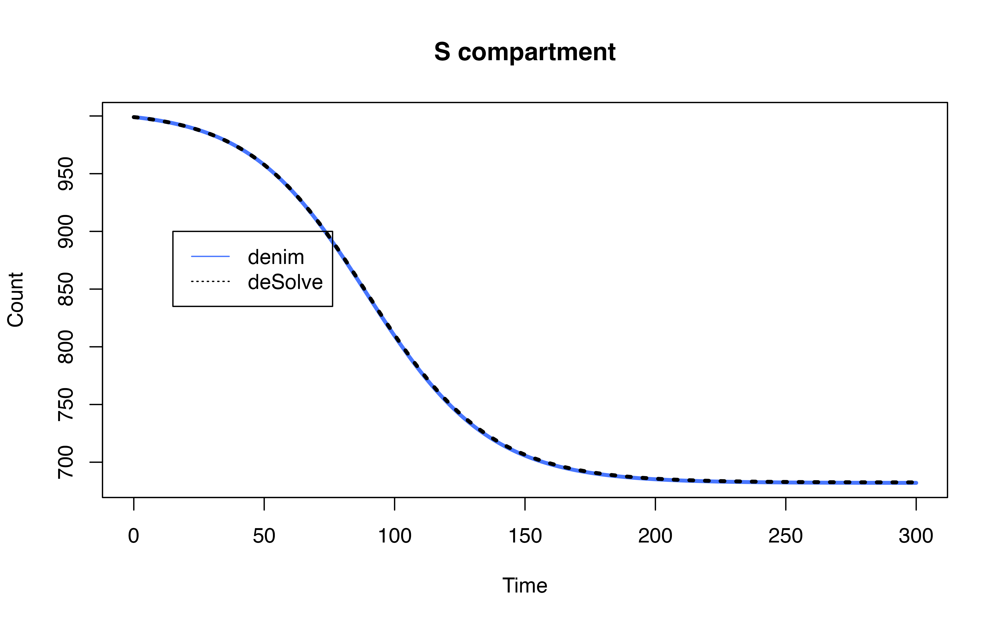
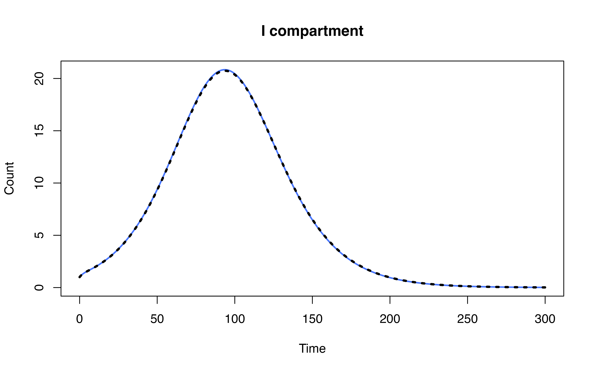
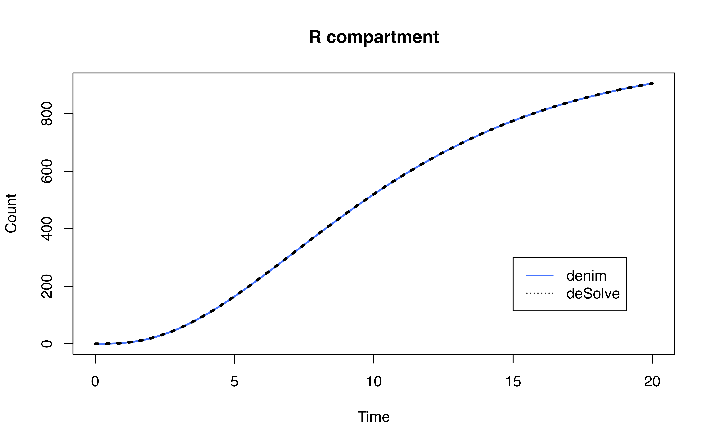
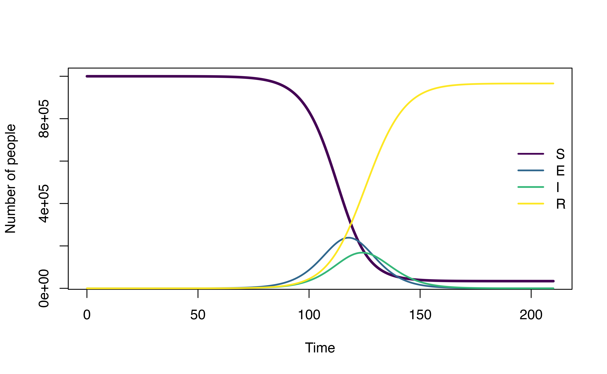

Comparison between deSolve and denim
Using deSolve, we can replicate Erlang
distribution and exponential distribution for
testing
## Warning: package 'deSolve' was built under R version 4.3.1
# --- Transition def for denim
transitions <- list(
"S -> I" = d_exponential(0.2),
"I -> R" = d_gamma(3, 2)
)
parameters <- c(rate = 0.2, scale = 3, shape=2)
initialValues <- c(S = 999, I = 1, I1 = 1, I2=0, R=0)
# --- Transition def for deSolve
transition_func <- function(t, state, param){
with(as.list( c(state, param) ), {
gamma_rate = 1/scale
dS = -rate*S
# apply linear chain trick
dI1 = rate*S - gamma_rate*I1
dI2 = gamma_rate*I1 - gamma_rate*I2
dI = dI1 + dI2
dR = gamma_rate*I2
list(c(dS, dI, dI1, dI2, dR))
})
}
# --- Timestep definition
simulationDuration <- 20
timestep <- 0.01 # small timestep required for comparisonRun simulation with denim
denim_start <- Sys.time()
mod <- sim(transitions = transitions, initialValues = initialValues, parameters, simulationDuration = simulationDuration, timeStep = timestep)
denim_end <- Sys.time()
# --- show output
head(mod[mod$Time %in% 1:simulationDuration,])## Time S I R
## 101 1 817.9120 179.1000 2.987976
## 201 2 669.6497 310.9933 19.356938
## 301 3 548.2628 398.6234 53.113777
## 401 4 448.8796 448.3469 102.773515
## 501 5 367.5116 467.9487 164.539700
## 601 6 300.8930 465.0545 234.052532Run simulation with deSolve
times <- seq(0, simulationDuration, timestep)
desolve_start <- Sys.time()
ode_mod <- ode(y = initialValues, times = times, parms = parameters, func = transition_func)
desolve_end <- Sys.time()
# --- show output
ode_mod <- as.data.frame(ode_mod)
head(ode_mod[ode_mod$time %in% 1:simulationDuration, c("time", "S", "I", "R")])## time S I R
## 101 1 817.9120 179.0585 3.029466
## 201 2 669.6497 310.8686 19.481654
## 301 3 548.2628 398.4125 53.324630
## 401 4 448.8796 448.0650 103.055392
## 501 5 367.5116 467.6172 164.871207
## 601 6 300.8930 464.6948 234.412204Execution time comparison
denim takes approximately 5.36 times as long as
deSolve to compute the result with the given specifications
.
This significant difference can be attributed to the difference in
approaches: deSolve solves a system of ODEs while
denim iterates through each timestep and updates the
population in each compartment
While the approach in denim allow more flexibility in
types of dwell time distributions, the computation time scales up as
timestep grows smaller (in O(n) time complexity).
Plot the result
# increase timestep before plotting
mod <- mod[mod$Time %in% seq(0, simulationDuration, 0.2),]
ode_mod <- ode_mod[ode_mod$time %in% seq(0, simulationDuration, 0.2),]
Comparison with SEIR model
Implementation using deSolve
model definition and runtime using deSolve
library(deSolve)
parameters <- c(scale_I = 4, shape_I=2,
scale_R = 3, shape_R = 2,
timeStepDur = 1, R0 = 3.5, N = 1e6)
initialValues <- c(S = 999999, E1 = 1,
E2 = 0, E = 0, I1=0,
I2=0, I=0, R=0
)
# --- Transition def for deSolve
transition_func <- function(t, state, param){
with(as.list( c(state, param) ), {
gamma_rate_I = 1/scale_I
gamma_rate_R = 1/scale_R
tr = scale_R*shape_R
dS = - (R0/tr) * S * I/N
# apply linear chain trick
dE1 = (R0/tr) * S * I/N - gamma_rate_I*E1
dE2 = gamma_rate_I*E1 - gamma_rate_I*E2
dE = dE1 + dE2
dI1 = gamma_rate_I*E2 - gamma_rate_R*I1
dI2 = gamma_rate_R*I1 - gamma_rate_R*I2
dI = dI1 + dI2
dR = gamma_rate_R*I2
list(c(dS, dE1, dE2, dE, dI1, dI2, dI, dR))
})
}
times <- seq(0, 210, 1)
# ------ Compute mean for 10 runs ------
# runtimes <- sapply(1:10,
# function(i){
# time <- system.time(
# ode(y = initialValues, times = times, parms = parameters, func = transition_func)
# )
# time[["elapsed"]]
#
# }
#
# )
# mean(runtimes)
ode_mod <- ode(y = initialValues, times = times, parms = parameters, func = transition_func)
# --- show output
ode_mod <- as.data.frame(ode_mod)Runtime for deSolve is ~ 0.013
Implementation using denim
model definition and runtime using denim
denim_model <- list(
"S -> E" = "(R0/tr) * timeStepDur * S * (I/N)", # formulate according that of uSEIR method
"E -> I" = d_gamma(scale = 4, shape = 2),
"I -> R" = d_gamma(scale = 3, shape = 2)
)
initialValues <- c(S = 999999, E = 1, I= 0, R= 0)
parameters <- c(R0 = 3.5,
tr = 3*2, # compute mean recovery time, for gamma it's scale*shape
N = 1e6, timeStepDur = 0.01)
# ------ Compute mean for 10 runs ------
# runtimes <- sapply(1:10,
# function (i) {
# time <- system.time(
# sim(transitions = denim_model,
# initialValues = initialValues,
# parameters = parameters,
# simulationDuration = 210, timeStep = 0.01)
# )
# return(time[["elapsed"]])
# })
# mean(runtimes)
mod <- sim(transitions = denim_model,
initialValues = initialValues,
parameters = parameters,
simulationDuration = 210, timeStep = 0.01)
# denim_out[, c("S","E", "I", "R")] <- denim_out[, c("S","E", "I", "R")]/1e6
plot(mod)
Runtime for denim is ~ 1.0548